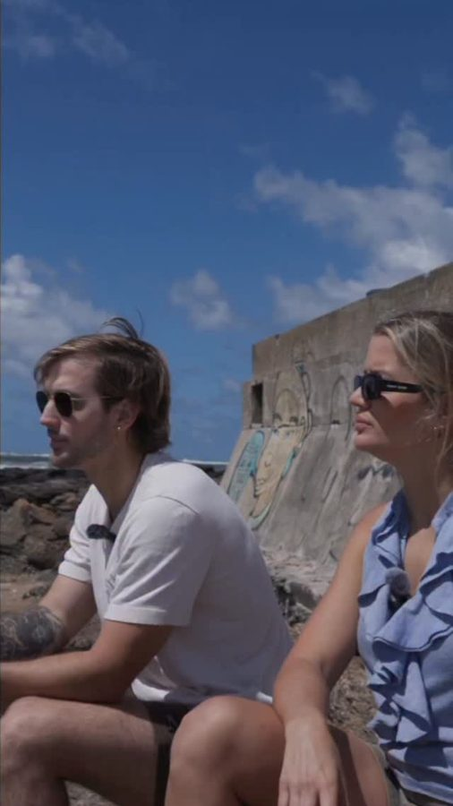
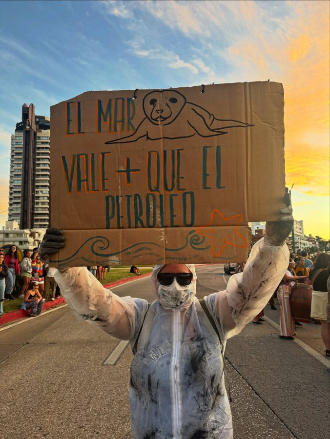
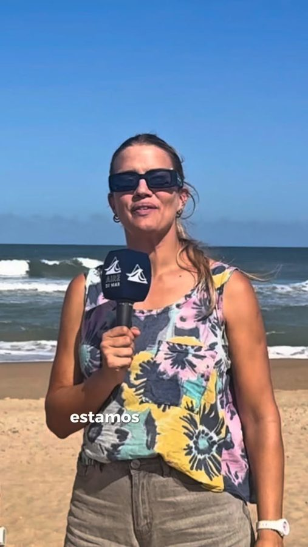
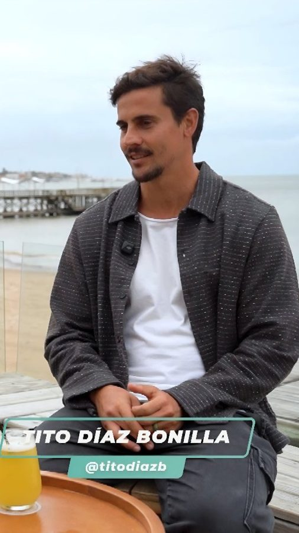
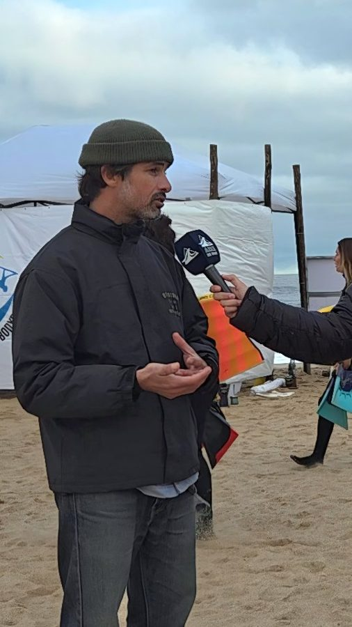

Sumá tu marca a Aire de Mar.
Deportes, comunidad y todo lo que se vive cerca del mar, todas las semanas en TV local, en un canal digital nacional y en redes.

Una comunidad adulta, local y que vive el mar.
Además de la audiencia de Canal Once Punta del Este, FIX TV y Antel TV, contamos con una audiencia que nos acompaña en nuestros contenidos digitales. Estos son los datos de nuestros seguidores en Instagram.
tiene entre 25 y 54 años. El grupo principal es el de 35 a 44.
vive en Maldonado y Montevideo, más toda la costa: Piriápolis, La Barra, San Carlos, La Paloma.
es de Uruguay. También nos siguen desde Argentina, Brasil y España.
Edad
Dónde están
Llegamos mucho más allá de nuestros seguidores.
Con nuestras cuentas de Instagram y YouTube, ampliamos la comunidad y la audiencia.
reproducciones en Instagram en los últimos 12 meses.
cuentas alcanzadas por mes, en promedio, durante 2026.
cada mes llegamos a cinco veces nuestra base de seguidores.
programas completos en YouTube: un archivo permanente y abierto.
Reproducciones por publicación (mediana)
Más del triple desde 2024.
Historias que la comunidad mira, comparte y hace propias.

Medio ambienteJornada en defensa del mar uruguayo
119.000 reproducciones · 79.000 cuentas · 394 compartidos
Surf nacionalCampeonato Uruguayo Juvenil de Surf
20.500 reproducciones · 14.700 cuentas
EntrevistasTito Díaz Bonilla, con Floppy Sagasti
12.800 reproducciones · 586 interacciones
ComunidadVuelve la Asociación Uruguaya de Bodyboard
7.200 reproducciones · 287 compartidosde interacción sobre el alcance.
veces compartido en 2026.
publicaciones con más de 5.000 reproducciones en 2026.
Cómo puede estar tu marca.
Los formatos que ya salen al aire, en TV y en redes. Armamos la propuesta a la medida de cada marca.
Apoya
Logo en la placa de marcas que acompañan cada programa.
TV y YouTube
Presenta
"Presenta" con la marca al abrir una entrevista o sección.
TV y YouTube
Vestuario
La marca viste a la conducción: "Floppy es vestida por…".
TV, YouTube e Instagram
Spot TV
Spot de la marca en la tanda del programa.
Canal Once, FIX TV y Antel TV
Placa fija y zócalo
Placa completa y zócalo con la marca durante el bloque.
TV y YouTube
Cierre en Reels
Cierre vertical con la marca en nuestros Reels.
Instagram y YouTube Shorts
Contenido de marca
Una nota o cápsula producida junto a la marca.
TV, Instagram y YouTube
Cobertura de evento
La marca presenta la cobertura de un campeonato o evento: nota, Reel y Stories.
TV, Instagram y YouTube
Armamos la propuesta a la medida de tu marca.
Datos de audiencia y alcance: Instagram Insights de @airedemar.uy y YouTube, octubre 2025 a septiembre 2026.